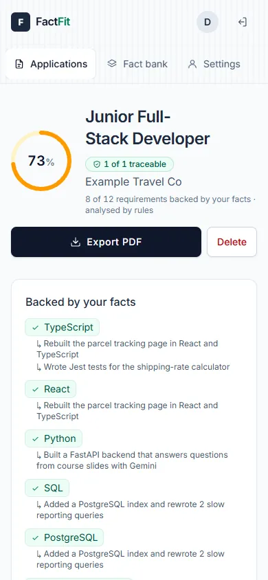

FactFit
Tailors a résumé to a job posting without inventing facts.


On the tuning set the guard blocked 547 of 547. A model told to "add metrics" was blocked 25 times out of 25. A prompt rewrite raised bullets that follow the XYZ format from 31.6% to 75%.
Next.js 16 · TypeScript · Tailwind 4 · Supabase Auth and Postgres · Drizzle · Gemini · @react-pdf/renderer · Vitest · GitHub Actions
- made-up claims blocked on a blind held-out set (95.3%)
- 164/172
- honest bullets accepted on the same set
- 24/30
You keep a bank of short facts about your work. Paste a job description and FactFit maps its skills to your facts, scores the fit, and drafts bullets in Google's XYZ format. A guard written in plain code blocks any bullet whose numbers or tool names don't trace back to a fact you wrote. Then it exports a PDF that applicant tracking systems can read.
Status: live, with a demo account. Every eval case is fictional data.
Open factfit-five.vercel.app